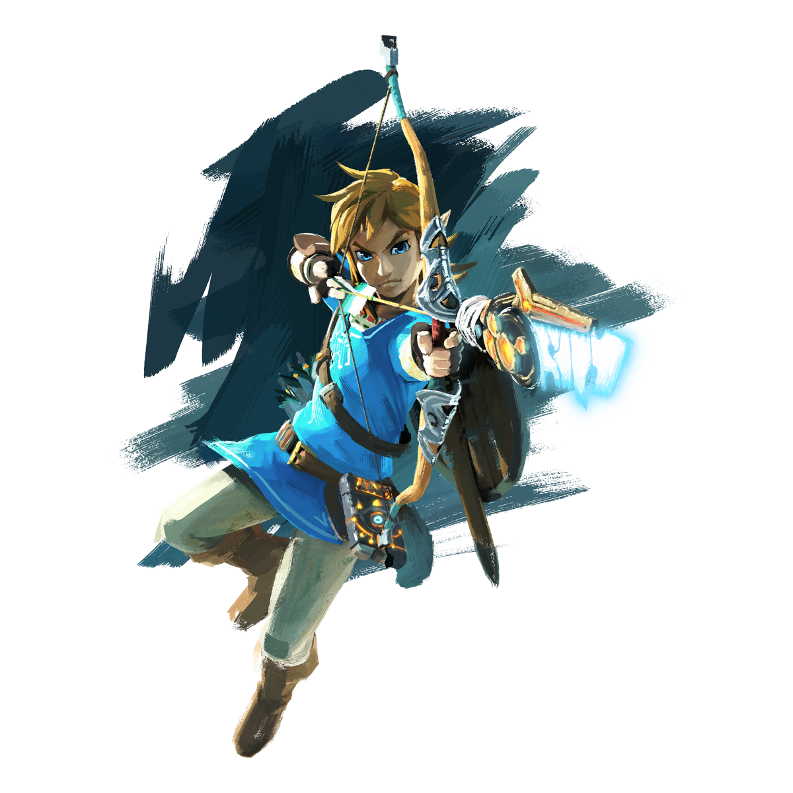
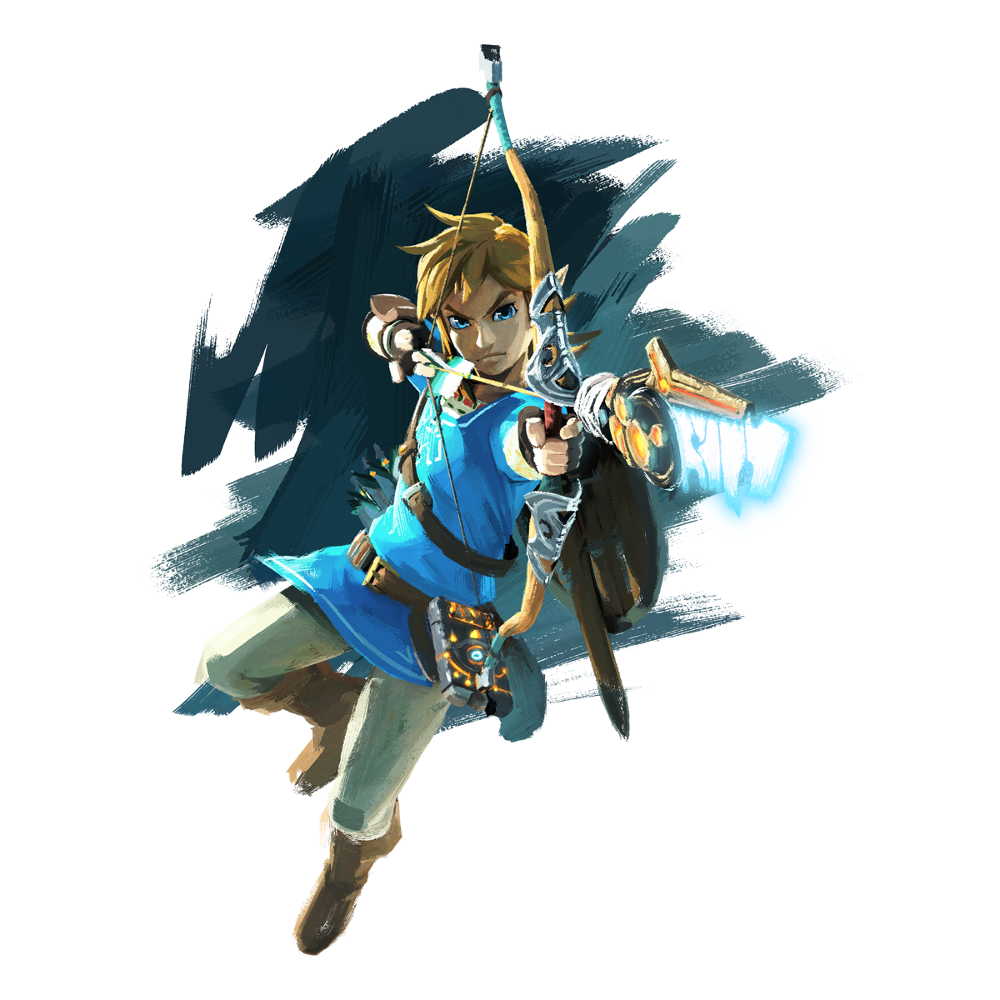

Oubliez tout ce que vous savez sur les jeux The Legend of Zelda. Plongez dans un monde de découverte, d'exploration et d'aventure
dans The Legend of Zelda: Breath of the Wild , un nouveau jeu qui vient bouleverser la série à succès.

Après un sommeil de d'un siècle, Link se réveille seul dans un monde qu'il ne reconnaît pas. Le héros légendaire va désormais devoir explorer un territoire vaste et dangereux et retrouver la mémoire avant qu'Hyrule ne soit perdu à jamais. Link un périple pour trouver des réponses où il devra se servir de tout ce qui se trouve sur sa route pour survivre.
Explorez les paysages d'Hyrule de la manière qui vous convient. Escaladez des tours et montagnes à la recherche de nouvelles
destinations et utilisez une mystérieuse tablette appelée "tablette sheikah" pour voir une carte d'Hyrule qui permet de repérer des
points d'intérêt.

Link peut couvrir rapidement un large territoire en montant à cheval, naviguer à travers les eaux d'Hyrule sur un radeau ou dévaler
les pentes en surfant sur son bouclier. Link a également la possibilité de fendre le ciel grâce son paravoile.
 


Grâce aux capacités d'adaptation de Link, celui-ci est capable d'acquérir différentes armes pour combattre. Néanmoins, ces armes
s'usent avec le temps et il devra sans cesse en chercher de nouvelles.

Mais pour combattre, il n'y a pas que les armes. Link devra également apprendre à maîtriser toutes sortes d'attaques, comme le tir de
flèches à longue portée ou la manipulation d'explosifs afin de ressortir vainqueur des affrontements qui l'attendent.
Il vous faudra donc chasser les créatures sauvages, récolter des fruits et des légumes, ou piller des campements ennemis pour y
trouver de la nourriture. Vous pourrez même apprendre des recettes pour pimenter le tout ! De nouvelles recettes ne modifient pas
uniquement le goût des aliments, elle permettent de soigner Link et de lui conférer un boost de compétence.